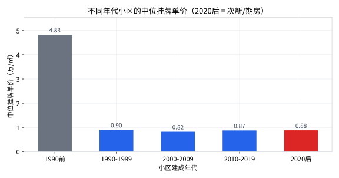

直觉说：房子越新越贵。这一课我们用数据检验这个直觉——结果会推翻它，并且顺手学到整个统计学最重要的思想：相关不等于因果。
pd.cut）corr）并读懂它做分析前先明确猜测，是防止"看数据编故事"的好习惯。来，先投票：
支持的理由：新房子设计好、贷款年限长、住着舒服。
反对的理由：老房子往往占着市中心和学区……
数据能不能验证？year_built 列有 7,106 个非空值（清洗后），足够做一次检验。开工，新建 step6_age.py：
import pandas as pd df = pd.read_csv("toy_realestate_sample.csv", encoding="utf-8-sig") df = df.drop_duplicates() df = df[df["synthetic"] == 0] df = df[df["price"].notna() & (df["price"] > 0)] # 只保留有建成年份的行（.copy() 避免 pandas 的复制警告） aged = df.dropna(subset=["year_built"]).copy() # 把连续年份切成 5 个年代组，就像直方图的 bins 一样 bins = [0, 1990, 2000, 2010, 2020, 2030] labels = ["1990前", "1990-1999", "2000-2009", "2010-2019", "2020后"] aged["era"] = pd.cut(aged["year_built"], bins=bins, labels=labels, right=False) era_stat = ( aged.groupby("era", observed=True) .agg(n=("community_name", "count"), median_price=("price", "median")) .reset_index() ) print(era_stat.to_string(index=False)) # 顺便算一下"年份"和"房价"的相关系数 print("\n相关系数：", round(aged["year_built"].corr(aged["price"]), 3))
① 最贵的居然是"1990 前"的老房子：中位 4.83 万/㎡，是其他年代的 5 倍多！年份跨过 1990 这条线，价格断崖式下跌，之后各年代挤在 0.82～0.90 万几乎不动。
② 相关系数是 -0.138——不是正的，是负的（虽然很弱）。也就是说：总体上，房子越新反而（略微）越便宜。
import matplotlib.pyplot as plt plt.rcParams["font.sans-serif"] = ["Microsoft YaHei", "PingFang SC", "SimHei"] plt.rcParams["axes.unicode_minus"] = False fig, ax = plt.subplots(figsize=(8, 4.2)) ax.bar(era_stat["era"].astype(str), era_stat["median_price"], width=0.55) ax.set_ylabel("中位挂牌单价（万/㎡）") ax.set_xlabel("小区建成年代") ax.set_title("不同年代小区的中位挂牌单价") plt.tight_layout() plt.savefig("era_price.png", dpi=150) plt.show()

数据不会说谎，但需要解释。问一个问题：这些 1990 年前的老房子都在哪？
# 查看 1990 年前小区的城市分布 old = aged[aged["year_built"] < 1990] print(old["city"].value_counts().head(6))
谜底揭开了一半。再补一刀——只看上海内部，楼龄和房价的相关性是多少？
sh = aged[aged["city"] == "上海"] print("上海内部相关系数：", round(sh["year_built"].corr(sh["price"]), 3), "，样本量：", len(sh))
① 混杂变量："城市"在暗中捣乱——能留到今天还被挂牌的 1990 年前老房子，大多在天津（老洋房）、上海（如第 3 课见过的 1950 年"良友别墅"，26.5 万/㎡）、北京这些贵城市。看到"老房子贵"，其实你看到的是"贵城市的老房子贵"。一旦控制城市不变（只看上海），相关系数立刻从 -0.138 缩水到 -0.024，几乎归零。
② 幸存者偏差：普通县城的 1990 年前老破小早就没人挂牌、也不在数据里了；能在数据里"存活"的老房子，本身就是被核心地段和学区筛选过的佼佼者。
③ 相关≠因果："年份→价格"的相关系数是负的，但绝不意味着"把房子拆了重建就会变便宜"。它只描述了这份数据里的同时出现关系，不承诺因果。
secondhand_count（挂牌套数）和 price 算一次相关系数，猜猜挂牌多的房子是贵还是便宜？# 练习1： bins = [1960, 1970, 1980, 1990, 2000, 2010, 2020, 2030] # 结论不变：1970-1990 之前的高价依然集中在少数贵城市。 # 练习2： print(aged["secondhand_count"].corr(aged["price"])) # 约 -0.1 上下，弱负相关 # 解读：挂牌套数多的小区（大盘、老小区）单价略低，但关系很弱。 # 练习3：算 rent_yuan_per_sqm 与 year_built 的 corr； # 混杂变量候选：城市、地段、装修、学区——和本课是同一个思路。